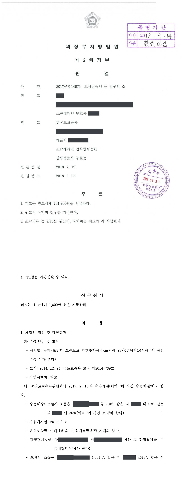

잔여지 손실보상금 증액 청구소송
의정부지방법원 2017구합14675 · 담당변호사 부효준
사건의 요지
고속도로 사업에 일부 토지가 수용된 후 남은 잔여지의 가치 하락에 대한 보상금 증액을 구한 사건으로, 법원은 청구액 1,000만 원 중 약 76만 원만을 인정했습니다.
사건의 주요 내용
민간투자사업으로 시행된 고속도로 건설사업(2014년 12월 고시)에 원고 소유의 토지 세 필지(임야 730㎡, 대 57㎡, 답 360㎡)가 편입되어 2017년 7월 수용재결이 이루어졌고, 보상금은 합계 21,436,800원으로 정해졌습니다. 원고는 수용되고 남은 잔여지 세 필지도 종래 목적대로 사용하기 어렵다며 함께 수용해 달라고 청구하였으나 수용재결에서 기각되었고, 2017년 11월 이의재결에서도 보상금 증액과 잔여지 수용 신청이 모두 기각되었습니다.
원고는 수용된 토지의 정당한 보상금이 재결 금액보다 500만 원 이상 많고 잔여지도 수용되어야 하며 그 보상금 역시 500만 원을 넘는다고 주장하면서, 합계 1,000만 원의 지급을 구하는 소를 제기하였습니다. 부효준 변호사는 피고 사업시행자를 대리하였습니다.
법원은 2018년 8월 법원 감정에 따른 차액 761,200원만 인용하고 잔여지 수용 청구 부분을 포함한 나머지 청구를 기각하였으며, 소송비용의 10분의 9를 원고가 부담하도록 하였습니다.
쟁점
- 재결감정과 법원감정이 같은 비교표준지를 쓰고 개별요인 비교에서만 차이가 날 때 어느 감정을 따를지
- 토지보상법 제74조 제1항의 잔여지 수용 청구 요건(종래 목적 사용의 현저한 곤란)을 누가 증명해야 하고 이 사건 잔여지가 그에 해당하는지
- 재결 단계에서 잔여지 수용만 청구하고 가격 감소 보상은 청구하지 않은 경우 소송에서 바로 잔여지 가격 감소 보상을 구할 수 있는지
원고의 주장
- 재결감정은 수용된 토지의 보상금을 지나치게 낮게 산정하였으므로 정당한 보상금은 재결 금액보다 500만 원 이상 많다고 주장하였습니다.
- 토지가 수용됨으로써 남은 잔여지를 종래 목적으로 사용하는 것이 현저히 곤란하므로 잔여지도 수용되어야 하고 그 보상금 역시 500만 원을 넘는다고 주장하면서, 소송 중에는 잔여지의 가격 감소에 대한 손실보상을 구하는 취지의 감정을 신청하였습니다.
부효준 변호사의 주장
- 손실보상금 증액 소송에서 정당한 보상금이 재결 금액보다 많다는 점은 원고가 증명해야 하고, 재결감정과 법원감정이 같은 비교표준지를 선정하여 적법한 방법으로 평가한 이상 그 차이는 개별요인 비교의 차이에 그친다는 점을 들어 재결감정의 정당성을 다투었습니다.
- 잔여지 수용 청구는 잔여지를 종래의 목적에 사용하는 것이 현저히 곤란하다는 요건을 잔여지 소유자가 입증해야 하는데 원고는 아무런 입증을 하지 않았고, 수용재결서·이의재결서와 지적도에 따르면 잔여지는 면적이 크고 부체도로가 개설되어 진출입이 가능하다는 점을 들었습니다. 잔여지 가격 감소에 따른 손실보상은 재결 단계에서 청구하지 않아 재결절차를 거치지 않았으므로 이 소송에서 구할 수 없다는 점도 지적하였습니다.
법원의 판단
법원은 정당한 보상금이 재결 금액보다 많다는 점의 증명책임은 원고에게 있고, 재결감정과 법원감정이 평가방법에 위법이 없이 개별요인 비교에서만 차이가 날 때 어느 것을 택할지는 논리칙·경험칙에 반하지 않는 한 법원의 재량이라는 대법원 판례(2004. 10. 15. 선고 2003두12226 판결 등)를 전제로, 토지의 특성과 현황을 개별요인에 상세히 반영하고 쌍방이 감정인 신문절차에 참여하여 작성된 법원감정을 채택하였습니다. 그 결과 법원감정 금액 22,198,000원과 재결 금액 21,436,800원의 차액 761,200원만 인용되었습니다.
잔여지 수용 청구에 관하여는, 토지보상법 제74조 제1항에 따라 잔여지 매수·수용을 청구하려면 일단의 토지 일부가 수용되어 잔여지를 종래의 목적에 사용하는 것이 현저히 곤란해야 하고 그 입증책임은 잔여지 소유자에게 있는데, 원고는 아무런 입증을 하지 않았고(시가 감정신청도 하지 않음) 오히려 수용재결서·이의재결서와 지적도에 따르면 잔여지는 각 필지의 면적이 크고 부체도로가 개설되어 진출입이 가능하므로 종래 목적대로 사용하기 현저히 곤란하다고 볼 수 없다고 하여 이 부분 청구를 기각하였습니다.
아울러 원고가 소송에서 잔여지 가격 감소에 따른 손실보상을 구하는 취지로 감정을 신청한 데 대하여는, 재결 당시 잔여지 수용만 청구하고 가격 감소 보상청구는 하지 않아 그에 관한 재결절차를 거치지 않았으므로 이 소송에서 잔여지 가격 감소 보상을 청구하는 것은 허용되지 않는다고 하였습니다(대법원 2014. 9. 25. 선고 2012두24092 판결).
손실보상금 증액청구의 소에 있어서 그 수용재결 및 이의재결에서 정한 손실보상금액보다 정당한 손실보상금액이 더 많다는 점에 대한 증명책임은 원고에게 있고, 또한 재결의 기초가 된 각 감정기관의 감정평가와 법원 감정인의 감정평가가 평가방법에 있어 위법사유가 없고 개별요인비교를 제외한 나머지 가격산정요인의 참작에 있어서는 서로 견해가 일치하나 개별요인비교에 관하여만 평가를 다소 달리한 관계로 감정결과에 차이가 생기게 된 경우, 그 중 어느 감정평가의 개별요인비교의 내용에 오류가 있음을 인정할 자료가 없는 이상 각 감정평가 중 어느 것을 취신하여 정당보상가액으로 인정하는가 하는 것은 그것이 논리칙과 경험칙에 반하지 않는 이상 법원의 재량에 속한다(대법원 2004. 10. 15. 선고 2003두12226 판결, 대법원 2005. 1. 28. 선고 2002두4679 판결 등 참조).
의정부지방법원 2017구합14675 판결 이유 '2. 나. 1) 가)'(증명책임과 감정 선택의 기준)
공익사업을 위한 토지 등의 취득 및 보상에 관한 법률 제74조 제1항에 따라 잔여지 매수 또는 수용을 청구하기 위해서는 동일한 소유자에게 속하는 일단의 토지의 일부가 협의에 의하여 매수되거나 수용됨으로 인하여 잔여지를 종래의 목적에 사용하는 것이 현저히 곤란할 사정이 인정되어야 하고, 위 요건에 대한 입증책임은 잔여지 소유자에게 있다고 할 것인데, 원고가 위 요건에 대한 아무런 입증을 하지 않았고(시가 감정신청도 하지 않았다), 오히려 이 사건 수용재결서(갑 제2호증) 및 이의재결서(갑 제1호증)의 기재와 지적도(갑 제3호증)의 영상에 의하면, 이 사건 잔여지는 각 토지별로 면적이 크고, 부체도로가 개설되어 있어 진출입이 가능한 사정 등에 비추어 종래의 목적대로 사용하는 것이 현저히 곤란하다고 보이지 않으므로, 원고의 이 부분 주장은 이유 없다
의정부지방법원 2017구합14675 판결 이유 '2. 나. 2) 이 사건 잔여지 수용에 따른 손실보상금'
(원고는, 이 사건 잔여지에 대하여 잔여지의 가격감소로 인한 손실보상을 구하는 취지로 감정을 신청하였으나, 이 사건 수용 및 이의 재결 당시 원고는 위 토지들에 대하여 종래의 목적대로 사용하는 것이 현저히 곤란함을 이유로 수용청구만을 하였을 뿐, 잔여지 가격감소로 인한 손실보상청구를 하지 아니하여 이에 대한 재결절차를 거치지 않았다 할 것이므로, 이 사건 소로써 그와 같은 잔여지 가격감소로 인한 손실보상청구는 허용되지 아니한다, 대법원 2014. 9. 25. 선고 2012두24092 판결 등 참조).
의정부지방법원 2017구합14675 판결 이유 '2. 나. 2)' 끝의 괄호 부분(잔여지 가격감소 보상청구와 재결절차)
※ 판결 이유 가운데 이 사건의 판단 기준이 된 부분을 그대로 옮긴 것으로, 당사자 이름 등은 가렸습니다.
이 사건이 보여 주는 것
토지 일부가 수용된 소유자가 남은 땅까지 사 달라고 요구하는 잔여지 수용 청구는, 잔여지를 종래 목적대로 쓰기가 현저히 곤란하다는 점을 소유자가 자료로 증명해야 합니다. 면적이 넉넉하고 부체도로로 진출입이 가능한 잔여지는 그 요건을 충족하기 어렵습니다. 또한 재결 단계에서 '수용'만 청구하고 '가격 감소 보상'은 청구하지 않았다면 소송에서 바로 가격 감소 보상을 구할 수 없으므로, 재결 신청 때부터 두 청구를 구분하여 모두 제기해 두어야 합니다.
보상금 증액 부분은 재결감정과 법원감정이 같은 비교표준지를 쓰고 개별요인에서만 차이가 났기 때문에 법원감정 금액이 그대로 채택되었는데, 그 차액은 청구액 1,000만 원의 8%에도 미치지 못하였습니다. 사업시행자 측에서는 재결감정의 적법성을 유지하면서 잔여지 요건과 재결절차 미경유를 다투는 것이 책임 범위를 줄이는 방법이 되었습니다.
관련 법령공익사업을 위한 토지 등의 취득 및 보상에 관한 법률 제74조 제1항(잔여지 매수·수용 청구)
관련 단어잔여지 수용 청구잔여지 손실보상종래 목적 사용의 현저한 곤란입증책임재결절차 미경유잔여지 가격감소 보상손실보상금 증액법원 감정개별요인 비교부체도로고속도로 민간투자사업청구 대부분 기각사업시행자 대리
판결문 1장

비슷한 처분을 받으셨다면
행정처분은 처분이 있음을 안 날부터 90일 이내에 행정심판이나 취소소송으로 다투어야 하고, 기간이 지나면 돌이킬 수 없는 처분은 집행정지를 서둘러야 합니다. 처분서를 받은 날짜부터 확인해 드립니다.